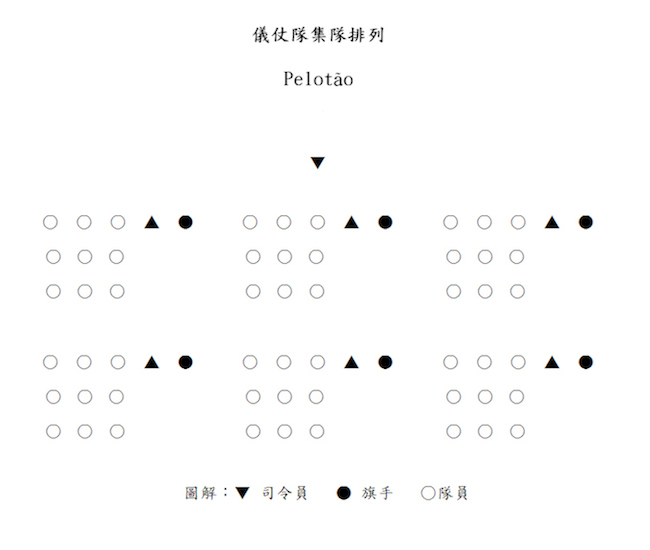
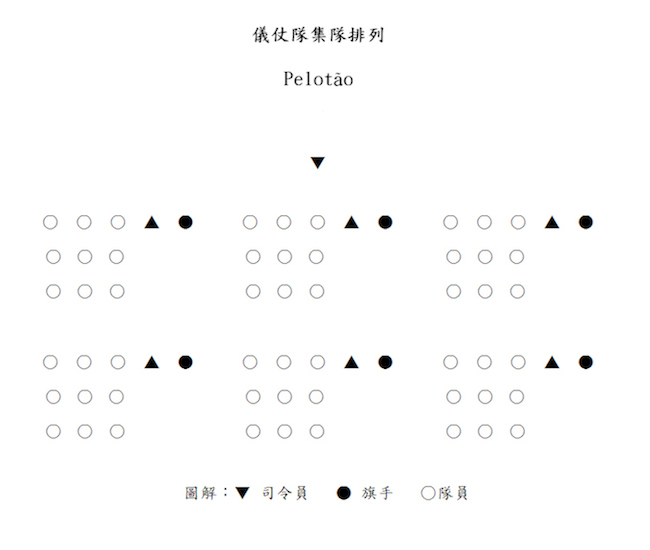

標準步操及禮儀
中國乃禮儀之邦，其文化源遠流長，更聞名於世。所以古語有云：「禮多人不怪」就是這個道理。所以我們童軍亦有責任盡力去保持和發揚此一中華傳統美德。
由於行禮的表達方式十分繁多，至於哪種方式為宜，則視其個人之經驗。下面，我們將分別介紹有關澳門童軍總會頒佈的禮儀規定和日常生活基本禮儀，供各位學員參考。
握手禮
澳門童軍現行使用的「左握禮」：
童軍專用的握手禮是以左手相握的，跟普通的握手禮不同，所以稱之為「左握禮」。凡童軍人士，都可以行此禮，乃表示彼此都是世界童軍一分子的一種表示。因為左手近心臟，所以又表示熱誠和友愛，實在是很有意義的。童軍行「握手禮」都用左手，進行握手禮時，將左手的手指伸直，拇指分開，其他四指合攏，然後和對方的左手相握，兩目要正視對方。
注目禮
行注目禮，等同以手作敬禮致敬。注目禮大致可分為「原地注目禮」和「行進間注目禮」。如果雙手都持著物件時，亦可行注目禮。
肅立禮
「肅立禮」是指以立定不動的姿勢來表示致敬的意思，作法近乎於「立正」的要求。行禮前須原地立定，身正直，頭要正，兩目正視，手下垂，成半握拳狀輕貼腿側。行禮時，不可旁觀，也不可左右搖動。
在奏國歌、會歌、旅歌等時候，全體人員於行禮前一律原地立正，面向前方，兩目正視，行肅立禮直至演奏完畢為止。如奏樂/歌期間配以升旗禮進行的話，則按「原地注目禮」處理禮進行。
鞠躬禮
「鞠躬禮」：有十五度鞠躬禮和三十度鞠躬禮之分。作「鞠躬禮」之前須立定，手下垂，成半握拳狀輕貼腿外側。行禮時，身體前傾，不可旁顧，也不可左右搖動。因為作法不易掌握，所以只要心意專注，度數多少不必在意，不過要特別注意一點 ─ 行禮時必須脫帽。
頷首禮
「頷首禮」即是點頭的意思。在我們的日常生活中，使用「頷首禮」的機會最多。選擇行一個斯文而又大方的「頷首禮」，不失是一種既方便又大方的敬禮方式。
行「頷首禮」時動作要注意斯文大方，恰到好處即可。通過點頭的動作，表達出我們的真誠。行禮時，切勿動作浮誇和輕佻。日常平輩、平職級相見面，都經常採用這種方式。行禮時，原地或行進間進行都可。
澳門童軍標準步操口令
| 序號 | 口令及其說明 |
| 1 | Escoteiros Forma － 全體童軍集合 |
| 2 | Grupos Forma － 全旅童軍集合 |
| 3 | Caminheiros Forma － 深資童軍團集合 |
| 4 | Tribos Forma － 童軍團集合 |
| 5 | Lobitos Forma － 幼童軍團集合 |
| 6 | Patrulha Forma － 小隊集合 |
| 7 | Atenção － 注意 |
| 8 | Içar à Bandeira － 升旗 |
| 9 | Arriar à Bandeira － 降旗 |
| 10 | Firme － 挺胸 |
| 11 | Sentido － 立正 |
| 12 | Descansar － 稍息 |
| 13 | À Vontade － 放鬆 |
| 14 | Primeira Forma － 回復至此口令前的步操動作 |
| 15 | Destroçar － 解散 |
| 16 | Continência － 敬禮 |
| 17 | Esquerda Volver － 向左轉 |
| 18 | Direita Volver － 向右轉 |
| 19 | Meia Volta Volver － 向後轉 |
| 20 | Pela direita perfilar － 向右看齊 |
| 21 | Com intervalos abertos pela direita perfilar － 闊橫排向右看齊 |
| 22 | Olhar frente － 向前看 |
| um, dois, três, quatro, cinco, seis, sete, oito, nove, dez － 一至十 | |
| 23 | -- passo(s) em frente marche － 向前行 -- 步 |
| 24 | -- passo(s) à retaguarda marche － 向後行 -- 步 |
| 25 | -- passo(s) lateral(is) à esquerda marche － 向左橫行 -- 步 |
| 26 | -- passo(s) laterial(is) à direita marche － 向右橫行 -- 步 |
| 27 | Lateral esquerdo marche － 向左方橫行 |
| 28 | Lateral direito marche － 向右方橫行 |
| 29 | Alto － 停步 |
| 30 | Abrir filerias marche － 散開橫列排（開行） |
| 31 | Unir Fileiras marche － 靠攏橫列排（閂行） |
| 32 | Marcar passo － 原地踏步 |
| 33 | Em ordinário marche － 標準步向前走 |
| 34 | Em frente marche － 向前走 |
| 35 | À esquerda rodar － 行進中向左轉彎 |
| 36 | À direita rodar － 行進中向右轉彎 |
| 37 | Olhar direita － 向右望 |
| 38 | Olhar frente － 向前望 |
| 39 | Ombro arma － 持旗 |
| 40 | Apresentar arma － 持旗敬禮 |
| 41 | Descansar arma － 持旗休息 |
| 42 | Numerar seguido começar － 報數 |
| 43 | Por (três) numerar － 由 (1) 至 (3) 報數 |
| 44 | Formar por alturas começar － 由高至矮排列 |
| 45 | Pelotão Forma － 儀仗隊集合 |
| 46 | Dar-me licença － 報告 |
| 47 | Pronto － 到 |
| 48 | Pela esquerda perfilar － 向左看齊 |
| 49 | Com intervalos normais pela esquerda perfilar － 窄橫排向左看齊 |
| 50 | Trocar passo － 換步 |
| 51 | Em acelerado marche － 快步向前走 |
| 52 | Em marcha lenta marche － 慢步向前走 |
| 53 | Em marcha à vontade marche － 自由步向前走 |
| 54 | Em continência à direita － 向右望敬禮 |
| 55 | Em continência à esquerda － 向左望敬禮 |
| 56 | Continência cessar － 敬禮完畢 |
| 57 | Passos corrida marche － 開步跑 |
| 58 | Em terra lançar-arma － 將棍置於地上 |
| 59 | De terra levanter-arma － 將棍取起 |
| 60 | Oitavo esquerdo volver － 45度角向左轉 |
| 61 | Oitavo direito volver － 45度角向右轉 |
| 62 | Grupo ______ Olhar direita － 第 __ 旅成員向右看敬禮 |
| 63 | Grupo ______ Olhar esquerda － 第 __ 旅成員向左看敬禮 |
| 64 | Grupo ______ Olhar frente － 第 __ 旅成員向前看 |
| 65 | Pode sentar － 全體坐下 |
| 66 | Levantar － 全體起立 |
| 67 | Alcateia － 幼童軍團呼集合 |
集隊之手號


 
